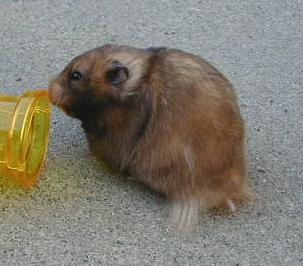
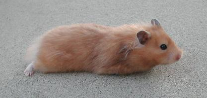

| CHA Syrian Guide Standards |
| Yellow Black Standard (often called Melanistic Yellow) (aaTo male & aaToTofemale) Color Top Coat: Black at the tips with rich dusky yellow carried well down Undercoat: Creamy ivory Belly Fur: Ivory Ticking: Heavy and even smokey black shading all over Flashes: Absent Crescents: Absent Chest Band: Absent Eyes: Black Ears: Dark gray |
| The CHA currently has two syrian guide standards: the Yellow Black and the Dove standard. Others will be added when they fit the criteria. Please note that colors appear differently on different computer monitors. We have done our best to give a fair representation, but some pictures may not be accurately represented on your monitor. |
|  |
|  |
| This Yellow Black female is too orange and lacks the required black tipping (both common faults in California). |
| This Yellow Black female has good tipping and color |
| Dove Standard (aapp) Color Top Color: Soft Dove Brown Base Color: Soft Dove Brown Belly Fur: Soft Dove Brown Crescents: Absent Ticking: Absent Flashes: Absent Chest Band: Absent Eye Color: Claret Red Ear Color: Greyish Brown |